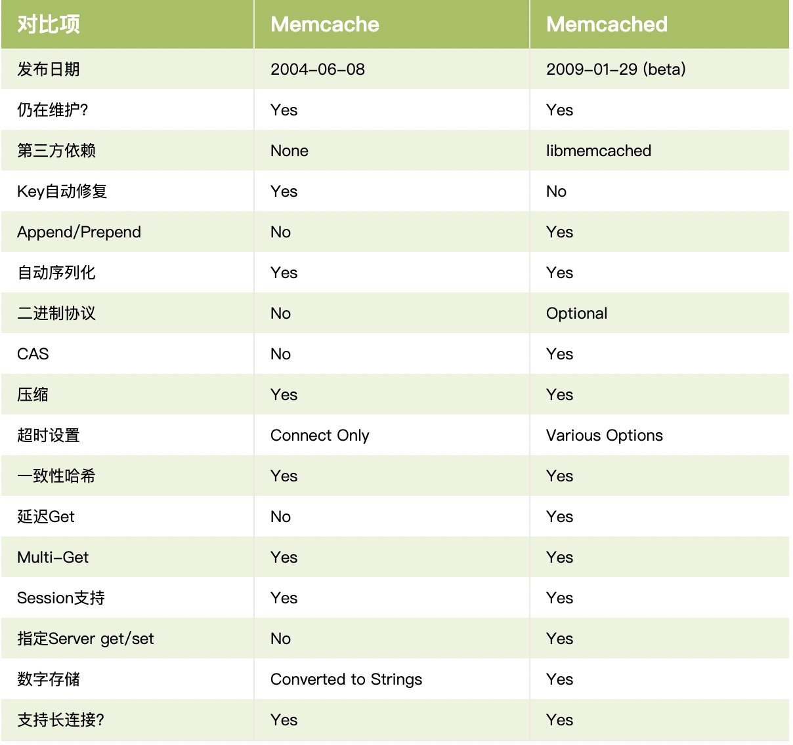
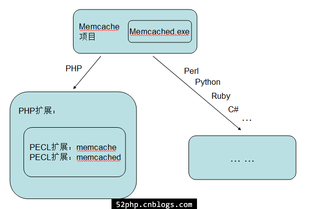

<!doctype html>
<html lang="zh-CN">
<head>

    <meta charset="utf-8">
    <meta http-equiv="X-UA-Compatible" content="IE=edge">
    <meta name="viewport" content="width=device-width, initial-scale=1">
    
    <meta name="referrer" content="no-referrer-when-downgrade">
    

    <title>Php-002memcache库介绍 | Liuzhongzhen的博客</title>
    <meta property="og:title" content="Php-002memcache库介绍 - Liuzhongzhen的博客">
    <meta property="og:type" content="article">
        
    <meta property="article:published_time" content='2014-08-02T11:47:39&#43;08:00'>
        
        
    <meta property="article:modified_time" content='2014-08-02T11:47:39&#43;08:00'>
        
    <meta name="Keywords" content="java python php sql">
    <meta name="description" content="Php-002memcache库介绍">
        
    <meta name="author" content="liuzhongzhen">
    <meta property="og:url" content="https://liuzhongzhen.github.io/post/Php-002memcache%E5%BA%93%E4%BB%8B%E7%BB%8D/">
    <link rel="shortcut icon" href='../../favicon.ico'  type="image/x-icon">

    <link rel="stylesheet" href='../../css/normalize.css'>
    <link rel="stylesheet" href='../../css/style.css'>
    <script type="text/javascript" src="//cdn.bootcdn.net/ajax/libs/jquery/3.4.1/jquery.min.js"></script>

    
    
    
    
    
    
        <link rel="stylesheet" href='../../css/douban.css'>
    
        <link rel="stylesheet" href='../../css/other.css'>
    
</head>


<body>
    <header id="header" class="clearfix">
    <div class="container">
        <div class="col-group">
            <div class="site-name ">
                
                    <a id="logo" href="https://liuzhongzhen.github.io/">
                        Liuzhongzhen的博客
                    </a>
                
                <p class="description">专注于大数据平台架构，平台开发、数据开发与分析、数据产品建设</p>
            </div>
            <div>
                <nav id="nav-menu" class="clearfix">
                    <a class="current" href="https://liuzhongzhen.github.io/">首页</a>
                    
                    <a  href="https://liuzhongzhen.github.io/leetcode/" title="leetcode">leetcode</a>
                    
                    <a  href="https://liuzhongzhen.github.io/books/" title="读书">读书</a>
                    
                    <a  href="https://liuzhongzhen.github.io/archives/" title="归档">归档</a>
                    
                    <a  href="https://liuzhongzhen.github.io/about/" title="关于">关于</a>
                    
                    <a  href="https://liuzhongzhen.github.io/products/" title="作品">作品</a>
                    
                </nav>
            </div>
        </div>
    </div>
</header>

    <div id="body">
        <div class="container">
            <div class="col-group">

                <div class="col-8" id="main">
                    
<div class="res-cons">
    <style type="text/css">
    .post-toc {
        position: fixed;
        width: 200px;
        margin-left: -210px;
        padding: 5px 10px;
        font-family: Athelas, STHeiti, Microsoft Yahei, serif;
        font-size: 12px;
        border: 1px solid rgba(0, 0, 0, .07);
        border-radius: 5px;
        background-color: rgba(255, 255, 255, 0.98);
        background-clip: padding-box;
        -webkit-box-shadow: 1px 1px 2px rgba(0, 0, 0, .125);
        box-shadow: 1px 1px 2px rgba(0, 0, 0, .125);
        word-wrap: break-word;
        white-space: nowrap;
        -webkit-box-sizing: border-box;
        box-sizing: border-box;
        z-index: 999;
        cursor: pointer;
        max-height: 70%;
        overflow-y: auto;
        overflow-x: hidden;
    }

    .post-toc .post-toc-title {
        width: 100%;
        margin: 0 auto;
        font-size: 20px;
        font-weight: 400;
        text-transform: uppercase;
        text-align: center;
    }

    .post-toc .post-toc-content {
        font-size: 15px;
    }

    .post-toc .post-toc-content>nav>ul {
        margin: 10px 0;
    }

    .post-toc .post-toc-content ul {
        padding-left: 20px;
        list-style: square;
        margin: 0.5em;
        line-height: 1.8em;
    }

    .post-toc .post-toc-content ul ul {
        padding-left: 15px;
        display: none;
    }

    @media print,
    screen and (max-width:1057px) {
        .post-toc {
            display: none;
        }
    }
</style>
<div class="post-toc" style="position: absolute; top: 188px;">
    <h2 class="post-toc-title">文章目录</h2>
    <div class="post-toc-content">
        <nav id="TableOfContents">
  <ul>
    <li><a href="#memcache-和-memcached-有什么区别">Memcache 和 Memcached 有什么区别</a></li>
    <li><a href="#memcached服务端">Memcached服务端</a></li>
    <li><a href="#php的memcached客户端">PHP的Memcached客户端</a></li>
    <li><a href="#什么是-libmemcached-">什么是 libmemcached ？</a></li>
    <li><a href="#必须同时安装服务端和客户端">必须同时安装服务端和客户端</a></li>
  </ul>
</nav>
    </div>
</div>
<script type="text/javascript">
    $(document).ready(function () {
        var postToc = $(".post-toc");
        if (postToc.length) {
            var leftPos = $("#main").offset().left;
            if(leftPos<220){
                postToc.css({"width":leftPos-10,"margin-left":(0-leftPos)})
            }

            var t = postToc.offset().top - 20,
                a = {
                    start: {
                        position: "absolute",
                        top: t
                    },
                    process: {
                        position: "fixed",
                        top: 20
                    },
                };
            $(window).scroll(function () {
                var e = $(window).scrollTop();
                e < t ? postToc.css(a.start) : postToc.css(a.process)
            })
        }
    })
</script>
    <article class="post">
        <header>
            <h1 class="post-title">Php-002memcache库介绍</h1>
        </header>
        <date class="post-meta meta-date">
            2014年8月2日
        </date>
        
        <div class="post-meta">
            <span>|</span>
            
            <span class="meta-category"><a href='../../categories/%E8%AF%AD%E8%A8%80-Php'>语言-Php</a></span>
            
        </div>
        
        
        <div class="post-meta">
            <span id="busuanzi_container_page_pv">|<span id="busuanzi_value_page_pv"></span><span>
                    阅读</span></span>
        </div>
        
        
        <div class="clear" style="display: none">
            <div class="toc-article">
                <div class="toc-title">文章目录</div>
            </div>
        </div>
        
        <div class="post-content">
            <h2 id="memcache-和-memcached-有什么区别">Memcache 和 Memcached 有什么区别</h2>
<p>Memcache 和 Memcached 看起来只是相差一个字母，平时老是搞混，今天整理下两者之间的区别。</p>
<p>
           
    
Memcached，简单来说就是一个免费开源并且高性能的分布式内存对象缓存系统，主要用于加速动态 Web 程序，减轻数据库负载。</p>
<p>Memcached 可以存储来自调用数据库和 API，或者页面渲染生成的任意类型的数据（字符串，对象）到内存中，也可以直接中内存中去读取。它的 API 支持目前大部分流行的编程语言，Memcached 的官方网站：<a href="http://memcached.org/">http://memcached.org/</a></p>
<p>它可以应对任意多个连接，使用非阻塞的网络IO。由于它的工作机制是在内存中开辟一块空间，然后建立一个HashTable，Memcache这个软件项目一般叫Memcache，但项目的主程序文件叫memcached.exe，是靠服务端的这个守护进程管理这些HashTable。由于这个命名问题，所以很多人把这个软件系统叫memcache，想叫成memcached也没什么问题！</p>
<p>首先 Memcached 是有服务端和客户端的，对于PHP来说，客户端就是PHP扩展。</p>
<h2 id="memcached服务端">Memcached服务端</h2>
<p>启动 Memcached 服务端是通过启动一个 memcached 的程序来实现的，这里的 d 的英文是 daemon，意思就是常驻进程的意思。</p>
<p>所以 Memcache 是对这个内存缓存的一个常用称呼，而 Memcached 是这个缓存数据库的实际运行程序。</p>
<h2 id="php的memcached客户端">PHP的Memcached客户端</h2>
<p>PHP 有两个 Memcached 客户端：“PHP Memcache 扩展” 和 “PHP Memcached 扩展”，这就是是我们搞混的地方。</p>
<p>PHP Memcache 扩展用纯 PHP 实现的，不依赖第三方库，支持面向对象和面向过程两种接口，2004年就实现了，是老客户端，而且功能少，属性也可设置的少。
函数列表：http://php.net/manual/zh/book.memcache.php</p>
<p>PHP Memcached 扩展基于 libmemcached 开发的，使用 libmemcached 库提供的 API 与 Memcached 服务进行交互，只支持面向对象的接口，2009年才实现，Memcached 扩展功能更加完善，支持的函数更多，比如支持批量操作，现在一般建议使用 Memcached 扩展。安装的时候要先安装libmemcached.
函数列表：http://php.net/manual/zh/book.memcached.php</p>
<p>下面是一个支持功能对照列表：

           
    
php-memcached扩展不支持长连接</p>
<h2 id="什么是-libmemcached-">什么是 libmemcached ？</h2>
<p>libmemcached 是一个 memcached 的库，客户端库，C 和 C++ 语言实现的客户端库，具有低内存占用率、线程安全、并提供对memcached功能的全面支持。它还采用 多种命令行工具： memcat ， memflush ， memrm ， memstat ，并memslap （负载代）。程序库一直在设计，让不同的散列方法对密钥，分割的钥匙，并使用统一的散列分配。 需要注意的是， libmemcached 不是 libmemcache ，它们是两个不同的客户端库，前者现在的开发比较活跃，后者已经有很长时间没有更新了。</p>
<p>PHP有两个针对上述软件的PECL扩展：一个叫memcache，一个叫memcached
memcache扩展是完全在PHP框架内开发的，memecached扩展是使用libmemcached的。从手册上看，memcached 会比 memcache 多几个方法，使用方式上都差不多，具体区别稍后再谈！</p>
<p>这样大家应该明白了吧，下面画了一个图帮助理解：

           
    </p>
<p>可知，不同语言都有自己针对Memcache的扩展！</p>
<p>PHP中memcache扩展和memcached扩展的区别
对于这个内存缓存系统，PHP有两个扩展，分别是memcache和memcached扩展。而memcached和memcache的守护进程 memcached 同名，比较容易引起混淆，甚至提到memcached，有些人第一想到的是后台的守护进程，这里还是有必要分析一下两者之间的区别，以下观点仅是个人观点，希望朋友进行补充和更正。</p>
<p>首先我们可以从php官方手册上可以清晰的看到两者的区别：</p>
<p>memcache：http://cn2.php.net/manual/en/book.memcache.php
memcached：http://cn2.php.net/manual/en/book.memcached.php
memcache是完全在PHP框架内开发的，memecached是使用libmemcached的。从手册上看，memcached 会比 memcache 多几个方法，使用方式上都差不多。</p>
<p>memcache是原生实现的，但是使用libmemcached的memached只支持OO接口，而 memcache则是OO和非OO两套接口并存,以后随着memcached服务器端的改进，这个lib也必定会马上跟进的。而memcache却不一定能做到按时跟进。</p>
<p>memcached，还有个非常称赞的地方，就是flag不是在操作的时候设置了。而是有一个统一的setOption()。memcached 实现了更多的 memcached 协议（毕竟是基于 libmemcached 库的）。</p>
<p>这里有另外一个对比表，很明显，用 memcached 会让人放心很多：http://code.google.com/p/memcached/wiki/PHPClientComparison</p>
<p>差别比较大的一点是，memcached 支持 Binary Protocol，而 memcache 不支持，意味着 memcached 会有更高的性能。不过，还需要注意的是，memcached 目前还不支持长连接。</p>
<p>PHP针对Memcache软件的memcache扩展：
Unix/Linux：最新版本3.0.5beta，下载地址：http://pecl.php.net/package/memcache
Windows：下载地址：http://www.php100.com/html/download/server/2010/0125/3858.html
PHP针对Memcache软件的memcached扩展：
Unix/Linux：最新版本1.0.2，下载地址：http://pecl.php.net/package/memcached
（注意：在Unix/Linux下安装需要先安装libevent，详细安装个系统稍有差异，安装PHP的memcached扩展需要先安装libmemcached，具体各种软件的安装方法在此不详述，大家自己google一下即可）</p>
<p>libmemcached官方：http://libmemcached.org/libMemcached.html
memcached官方：http://www.memcached.org/
PHP的memcached客户端memcahce与memcached比较：http://code.google.com/p/memcached/wiki/PHPClientComparison</p>
<h2 id="必须同时安装服务端和客户端">必须同时安装服务端和客户端</h2>
<p>如果安装了 Memcached 服务端不安装扩展，那么 PHP 无法操控 Memcached。</p>
<p>同样如果安装了 PHP Memcached 扩展（PHP Memcache 和 PHP memcached 两者选择一个)，但是没有安装 Memcached 服务端，那么这个就无法使用。</p>
<p>只有同时安装了 Memcached 服务端和 PHP 客户端扩展才可以提高动态网站性能。</p>
<p>那么这两个针对memcached服务的api之间有什么区别呢？</p>
<ol>
<li>memcache是PHP自己的扩展，而memcached是基于libmemcached的扩展。</li>
<li>memcache只提供一些基本功能，比如set、get、replace、delete、flush 等等，
memcached提供的功能更丰富，有setOption(setOptions)、cas、getMulti(setMulti)、getMultiByKey(setMultiByKey)、addServers(带s，一次性可连接多个节点)。</li>
<li>听说memcached的性能比memcache更高，因为支持binary protocol。</li>
<li>memcache支持持久化连接，而memcached不支持。</li>
</ol>

        </div>

        


        

<div class="post-archive">
    <h2>See Also</h2>
    <ul class="listing">
        
        <li><a href="../../post/Php-001%E5%AD%A6%E4%B9%A0%E8%B5%84%E6%96%99%E6%95%B4%E7%90%86/">Php-001学习资料整理</a></li>
        
        <li><a href="../../products/%E8%85%BE%E8%AE%AF-DC%E6%95%B0%E6%8D%AE%E6%8E%A5%E5%85%A5%E5%B9%B3%E5%8F%B0/">腾讯-DC数据接入平台</a></li>
        
        <li><a href="../../post/%E7%BD%91%E7%BB%9CPPT-%E8%85%BE%E8%AE%AF009TDW%E8%AE%A1%E7%AE%97%E5%BC%95%E6%93%8E%E8%A7%A3%E6%9E%90Scheduler/">腾讯009TDW计算引擎解析Scheduler</a></li>
        
        <li><a href="../../post/%E7%BD%91%E7%BB%9CPPT-%E8%85%BE%E8%AE%AF008TDW%E8%AE%A1%E7%AE%97%E5%BC%95%E6%93%8E%E8%A7%A3%E6%9E%90Shuffle/">腾讯008TDW计算引擎解析Shuffle</a></li>
        
        <li><a href="../../post/%E7%BD%91%E7%BB%9CPPT-%E8%85%BE%E8%AE%AF007%E5%A4%A7%E6%95%B0%E6%8D%AE%E5%9F%BA%E7%A1%80%E5%B9%B3%E5%8F%B0%E4%BB%8B%E7%BB%8D/">腾讯007大数据基础平台介绍</a></li>
        
    </ul>
</div>


        <div class="post-meta meta-tags">
            
            没有标签
            
        </div>
    </article>
    
    

    
    
    <div class="post bg-white">
      <script src="https://utteranc.es/client.js"
            repo= "liuzhongzhen/liuzhongzhen.github.io"
            issue-term="pathname"
            theme="github-light"
            crossorigin="anonymous"
            async>
      </script>
    </div>
    
</div>

                    <footer id="footer">
    <div>
        &copy; 2021 <a href="https://liuzhongzhen.github.io/">Liuzhongzhen的博客 By liuzhongzhen</a>
        
    </div>
    <br />
    <div style="display:none;">
        <div class="github-badge">
            <a href="https://gohugo.io/" target="_black" rel="nofollow"><span class="badge-subject">Powered by</span><span class="badge-value bg-blue">Hugo</span></a>
        </div>
        <div class="github-badge">
            <a href="https://www.flysnow.org/" target="_black"><span class="badge-subject">Design by</span><span class="badge-value bg-brightgreen">飞雪无情</span></a>
        </div>
        <div class="github-badge">
            <a href="https://github.com/flysnow-org/maupassant-hugo" target="_black"><span class="badge-subject">Theme</span><span class="badge-value bg-yellowgreen">Maupassant</span></a>
        </div>
    </div>
</footer>


    
    <script type="text/javascript">
        window.MathJax = {
            tex2jax: {
                inlineMath: [['$', '$']],
                processEscapes: true
                }
            };
    </script>
    <script src='https://cdnjs.cloudflare.com/ajax/libs/mathjax/2.7.5/MathJax.js?config=TeX-MML-AM_CHTML' async></script>

<a id="rocket" href="#top"></a>
<script type="text/javascript" src='../../js/totop.js?v=0.0.0' async=""></script>


    <script type="text/javascript" src="//busuanzi.ibruce.info/busuanzi/2.3/busuanzi.pure.mini.js" async></script>


    <script src='../../js/douban.js'></script>

                </div>

                <div id="secondary">
    <section class="widget">
        <form id="search" action='https://liuzhongzhen.github.io/search/' method="get" accept-charset="utf-8" target="_blank" _lpchecked="1">
      
      <input type="text" name="q" maxlength="20" placeholder="Search">
      <input type="hidden" name="sitesearch" value="https://liuzhongzhen.github.io/">
      <button type="submit" class="submit icon-search"></button>
</form>
    </section>
    
    <section class="widget">
        <h3 class="widget-title">最近文章</h3>
<ul class="widget-list">
    
    <li>
        <a href="https://liuzhongzhen.github.io/post/%E5%A4%A7%E6%95%B0%E6%8D%AE-100%E6%95%B0%E6%8D%AE%E9%9B%86%E6%88%90%E8%B0%83%E7%A0%94/" title="大数据 100数据集成调研">大数据 100数据集成调研</a>
    </li>
    
    <li>
        <a href="https://liuzhongzhen.github.io/post/Mysql-007%E5%9F%BA%E7%A1%80%E7%9F%A5%E8%AF%86/" title="Mysql-007基础知识">Mysql-007基础知识</a>
    </li>
    
    <li>
        <a href="https://liuzhongzhen.github.io/post/Mysql-006%E8%A7%A3%E8%AF%BB%E4%BA%8B%E5%8A%A1%E5%92%8CMVVC%E5%8E%9F%E7%90%86/" title="Mysql-006解读事务和MVVC原理">Mysql-006解读事务和MVVC原理</a>
    </li>
    
    <li>
        <a href="https://liuzhongzhen.github.io/post/Mysql-005%E6%B5%85%E8%B0%88Mysql%E6%9E%B6%E6%9E%84%E4%BD%93%E7%B3%BB/" title="Mysql-005浅谈Mysql架构体系">Mysql-005浅谈Mysql架构体系</a>
    </li>
    
    <li>
        <a href="https://liuzhongzhen.github.io/post/%E5%A4%A7%E6%95%B0%E6%8D%AE-010flume%E5%9F%BA%E7%A1%80%E7%9F%A5%E8%AF%86/" title="大数据 010flume基础知识">大数据 010flume基础知识</a>
    </li>
    
    <li>
        <a href="https://liuzhongzhen.github.io/post/%E5%A4%A7%E6%95%B0%E6%8D%AE-009kafka%E5%9F%BA%E7%A1%80%E7%9F%A5%E8%AF%86/" title="大数据 009kafka基础知识">大数据 009kafka基础知识</a>
    </li>
    
    <li>
        <a href="https://liuzhongzhen.github.io/post/%E5%A4%A7%E6%95%B0%E6%8D%AE-008hbase%E5%9F%BA%E7%A1%80%E7%9F%A5%E8%AF%86/" title="大数据 008hbase基础知识">大数据 008hbase基础知识</a>
    </li>
    
    <li>
        <a href="https://liuzhongzhen.github.io/post/%E5%A4%A7%E6%95%B0%E6%8D%AE-007clickhouse%E5%9F%BA%E7%A1%80%E7%9F%A5%E8%AF%86/" title="大数据 007clickhouse基础知识">大数据 007clickhouse基础知识</a>
    </li>
    
    <li>
        <a href="https://liuzhongzhen.github.io/post/%E5%A4%A7%E6%95%B0%E6%8D%AE-006impala%E5%9F%BA%E7%A1%80%E7%9F%A5%E8%AF%86/" title="大数据 006impala基础知识">大数据 006impala基础知识</a>
    </li>
    
    <li>
        <a href="https://liuzhongzhen.github.io/post/%E5%A4%A7%E6%95%B0%E6%8D%AE-005flink%E5%9F%BA%E7%A1%80%E7%9F%A5%E8%AF%86/" title="大数据 005flink基础知识">大数据 005flink基础知识</a>
    </li>
    
</ul>
    </section>

    

    <section class="widget">
        <h3 class="widget-title"><a href='../../categories/'>分类</a></h3>
<ul class="widget-list">
    
    <li><a href="https://liuzhongzhen.github.io/categories/Web-Http/">Web-Http (2)</a></li>
    
    <li><a href="https://liuzhongzhen.github.io/categories/Web-Nginx/">Web-Nginx (3)</a></li>
    
    <li><a href="https://liuzhongzhen.github.io/categories/%E5%A4%A7%E6%95%B0%E6%8D%AE-000%E6%95%B0%E6%8D%AE%E5%88%86%E6%9E%90/">大数据-000数据分析 (3)</a></li>
    
    <li><a href="https://liuzhongzhen.github.io/categories/%E5%A4%A7%E6%95%B0%E6%8D%AE-001hadoop%E4%B9%8Bhdfs/">大数据-001hadoop之hdfs (1)</a></li>
    
    <li><a href="https://liuzhongzhen.github.io/categories/%E5%A4%A7%E6%95%B0%E6%8D%AE-002hadoop%E4%B9%8Byarn/">大数据-002hadoop之yarn (1)</a></li>
    
    <li><a href="https://liuzhongzhen.github.io/categories/%E5%A4%A7%E6%95%B0%E6%8D%AE-003hive/">大数据-003hive (3)</a></li>
    
    <li><a href="https://liuzhongzhen.github.io/categories/%E5%A4%A7%E6%95%B0%E6%8D%AE-004spark/">大数据-004spark (1)</a></li>
    
    <li><a href="https://liuzhongzhen.github.io/categories/%E5%A4%A7%E6%95%B0%E6%8D%AE-005flink/">大数据-005flink (1)</a></li>
    
    <li><a href="https://liuzhongzhen.github.io/categories/%E5%A4%A7%E6%95%B0%E6%8D%AE-006impala/">大数据-006impala (1)</a></li>
    
    <li><a href="https://liuzhongzhen.github.io/categories/%E5%A4%A7%E6%95%B0%E6%8D%AE-007clickhouse/">大数据-007clickhouse (1)</a></li>
    
    <li><a href="https://liuzhongzhen.github.io/categories/%E5%A4%A7%E6%95%B0%E6%8D%AE-008hbase/">大数据-008hbase (1)</a></li>
    
    <li><a href="https://liuzhongzhen.github.io/categories/%E5%A4%A7%E6%95%B0%E6%8D%AE-009kafka/">大数据-009kafka (1)</a></li>
    
    <li><a href="https://liuzhongzhen.github.io/categories/%E5%A4%A7%E6%95%B0%E6%8D%AE-010flume/">大数据-010flume (1)</a></li>
    
    <li><a href="https://liuzhongzhen.github.io/categories/%E5%A4%A7%E6%95%B0%E6%8D%AE-100%E6%95%B0%E6%8D%AE%E9%9B%86%E6%88%90/">大数据-100数据集成 (1)</a></li>
    
    <li><a href="https://liuzhongzhen.github.io/categories/%E5%BA%8F%E5%88%97%E5%8C%96/">序列化 (1)</a></li>
    
    <li><a href="https://liuzhongzhen.github.io/categories/%E6%95%B0%E6%8D%AE%E5%BA%93-Mysql/">数据库-Mysql (7)</a></li>
    
    <li><a href="https://liuzhongzhen.github.io/categories/%E6%95%B0%E6%8D%AE%E7%BB%93%E6%9E%84/">数据结构 (12)</a></li>
    
    <li><a href="https://liuzhongzhen.github.io/categories/%E7%B3%BB%E7%BB%9F%E8%AE%BE%E8%AE%A1/">系统设计 (2)</a></li>
    
    <li><a href="https://liuzhongzhen.github.io/categories/%E7%BC%93%E5%AD%98-Memcache/">缓存-Memcache (4)</a></li>
    
    <li><a href="https://liuzhongzhen.github.io/categories/%E7%BD%91%E7%BB%9CPPT/">网络PPT (10)</a></li>
    
    <li><a href="https://liuzhongzhen.github.io/categories/%E8%AF%AD%E8%A8%80-Java/">语言-Java (2)</a></li>
    
    <li><a href="https://liuzhongzhen.github.io/categories/%E8%AF%AD%E8%A8%80-Php/">语言-Php (10)</a></li>
    
    <li><a href="https://liuzhongzhen.github.io/categories/%E8%AF%AD%E8%A8%80-Python/">语言-Python (1)</a></li>
    
</ul>
    </section>

    <section class="widget">
        <h3 class="widget-title"><a href='../../tags/'>标签</a></h3>
<div class="tagcloud">
    
</div>
    </section>

    

    <section class="widget">
        <h3 class="widget-title">其它</h3>
        <ul class="widget-list">
            <li><a href="https://liuzhongzhen.github.io/index.xml">文章 RSS</a></li>
        </ul>
    </section>
</div>
            </div>
        </div>
    </div>
</body>

</html>